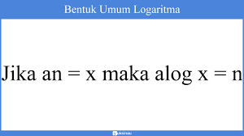
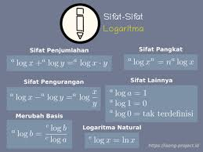

Bab-1 Logaritma
Pengertian Logaritma
Sebelumnya, mari kita ketahui dulu apa itu logaritma. Logaritma adalah suatu invers atau kebalikan dari pemangkatan (eksponen) yang digunakan untuk menentukan besar pangkat dari suatu bilangan pokok. Jadi intinya, dengan mempelajari logaritma kita bisa mencari besar pangkat dari suatu bilangan yang diketahui hasil pangkatnya.
"Loh, bukannya mencari besar pangkat itu mudah, ya? Misalnya, 2 pangkat berapa yang hasilnya 8, jawabannya pasti 3. Kenapa harus pusing-pusing belajar logaritma?"
Yeee... kalau itu sih memang mudah karena bilangan yang memiliki pangkat dan bilangan hasil pemangkatannya itu sama-sama merupakan bilangan bulat. Tapi, bagaimana jika salah satunya ada yang desimal? Contohnya, 5 pangkat berapa yang hasilnya 2.236? Hayooo... Nah loh! Bingung, kan?
Oleh sebab itu, logaritma membantu kita untuk menemukan jawabannya. Sekarang kalian paham kan kenapa harus mempelajari materi logaritma. Selain itu, perlu kamu ketahui juga nih, materi logaritma ini tidak hanya digunakan di bidang studi matematika saja loh, tapi juga di bidang studi lain, seperti menentukan orde reaksi dalam pelajaran laju reaksi kimia, menentukan koefisien serap bunyi dalam pelajaran akustik, dan masih banyak lagi. Nyesel nggak sih kalau kamu nggak benar-benar paham dengan materi ini?
Bentuk Umum Logaritma
Dalam penulisan logaritma alog b disebut bilangan pokok logaritma. Perhatikan bahwa a harus positif dan ≠1. Jika bilangan pokok bernilai 10 maka biasanya bilangan pokoknya tidak ditulis. Jika bilangan pokoknya e maka logaritmanya ditulis dengan ln. alogb= In b
Contoh:
- Jika 34=81 maka dalam bentuk logaritma menjadi 3log 81=4
- jika 2 6=64 maka dalam bentuk logaritma menjadi 2log64=6
Tips buat kalian nih untuk membedakan mana angka basis dan mana angka numerus. Kuncinya kalian Cuma perlu ingat, kalau angka basis itu bilangan pokok, dimana letaknya diatas sebelum tanda “log”. Sedangkan angka numerus itu merupakan bilangan hasil pangkat, dimana letaknya di bawah setelah kata “log”. Tidak hanya cukup mengetahui bentuk umum logaritma supaya kamu dapat menyelesaikan permasalahan yang berkaitan dengan logaritma. Kalian harus tahu sifat-sifat dari logaritma. Yuk, simak penjelasannya!
Sifat-sifat Logaritma
Tenang saja, Sobat Mediapintar.com. Kamu tidak perlu langsung pusing atau bingung dengan melihat poin-poin di atas. Sebab, sebenarnya sifat-sifat logaritma di atas bisa kamu pahami dengan sangat mudah kalau kamu langsung menggunakannya untuk mengerjakan latihan-latihan soal logaritma, kok!
Contoh soal 1
2log 16 = ...
Jawab:
2log 16 = 2log 2 4
= 4 x 2log 2 (ingat alog a = 1)
= 4 x 1
= 4
Contoh soal 2.
5log 100 - 5log 4 = ...
Jawab:
5log 100 - 5log 4 = 5log 100/4
= 5log 25
= 5log 5.5
= 2 x 5log 5
= 2 x 1
= 2
Nah, gimana Sobat Pintar? Setelah mempelajari soal tadi kamu jadi makin paham, kan? Ternyata logaritma tidak serumit yang kita bayangkan sebelumnya, ya. Kuncinya adalah kamu harus menguasai konsep dan sifat-sifat logaritma. Jangan lupa perbanyak mengerjakan latihan soal ya supaya kemampuan kamu makin terasah, sehingga apapun bentuk soal logaritma akan mudah kamu pecahkan. Selain materi logaritma, kalian juga bisa belajar tentang materi-materi lainnya melalui website Mediapintar.com ini fitur Belajar Pintar mata pelajaran Matematika. Sampai bertemu di pembahasan berikutnya, Sobat Mediapintar.com!